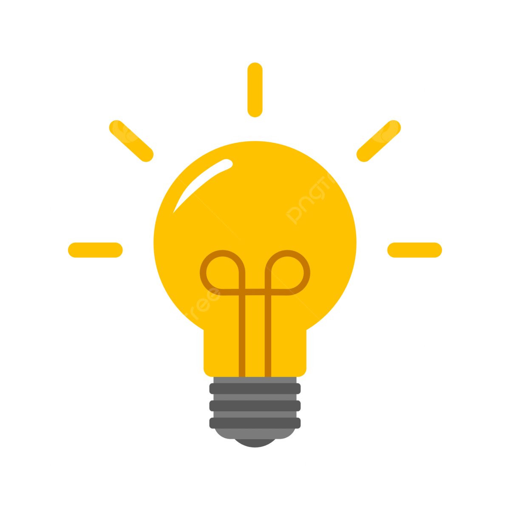
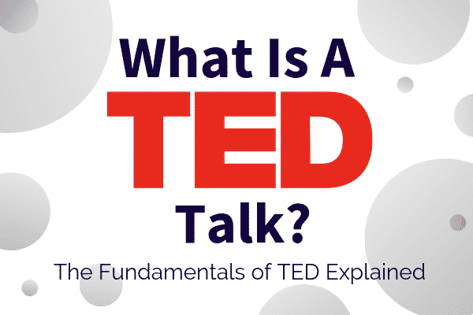
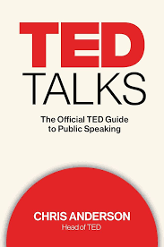
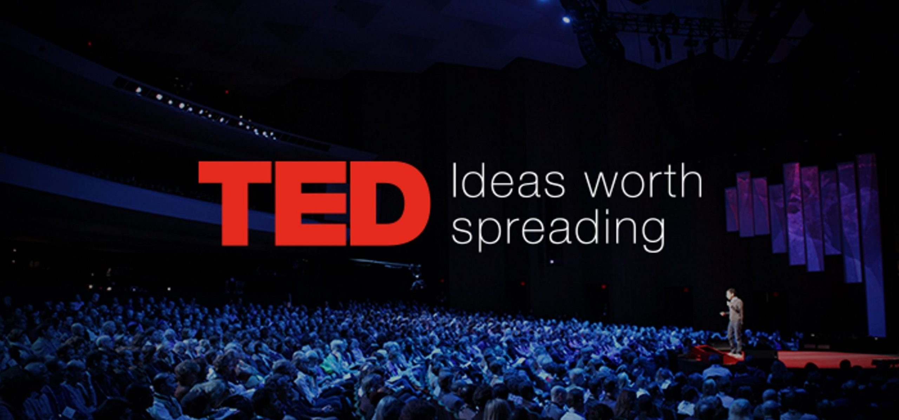

What would an AI talk about if it were asked to give a TED Talk?
Would the talk captivate the audience or leave them wishing for a human speaker instead?
To find out, I decided to have an AI create a TED Talk script on a random topic and then evaluate whether it could hold the audience’s attention. The challenge: AI doesn’t live in the world, it doesn’t have personal experiences, and it lacks the human connection that makes a good TED Talk unforgettable. Could an AI still create something that might resonate with us?

Here’s the script AI generated for the TED Talk:
“The Power of Imperfection: Why We Should Celebrate Flaws
Opening:
The lights go down. A soft but confident voice fills the room.
“Good evening, everyone. I’m here to talk about something we all share: our imperfections. The very thing that we often hide, avoid, or criticize. What if I told you that embracing imperfection could be the key to living a more fulfilling life? A life that’s not about perfection or flawless performance, but about being unapologetically human.”
Pause for effect.
“Let’s start with a story—imagine you’re watching a movie, and you’re totally immersed in it. The actors, the plot, the setting—it’s all perfect. But at some point, you notice a tiny mistake: an actor’s line is a little off, a prop falls out of place, or the lighting shifts in a way it shouldn’t. Suddenly, the perfect movie loses its charm. The illusion is shattered. Why? Because we, as humans, are conditioned to seek authenticity, not perfection. Perfection feels staged, unnatural. And it’s the flaws in the story that make it real.”
Pause.
“Now think about your own life. How often do you focus on the things that aren’t quite right? The small mistakes at work, the little missteps in conversations, the imperfections in your appearance? What if, instead of focusing on those flaws, you embraced them as part of who you are?”
Middle:
The tone shifts to a more reflective, encouraging tone.
“We all strive for perfection—whether it’s in our careers, relationships, or even on social media. But why do we feel the need to be perfect? It’s the fear of judgment, of not being good enough. But guess what? Everyone else is just as imperfect as you. In fact, it’s our imperfections that connect us. They create vulnerability, which leads to empathy. It’s why we relate to characters in movies who stumble, or to a friend who shares their struggles. It’s the rawness, the authenticity, that makes them memorable.”
Pause.
“Let’s talk about mistakes for a moment. We often see mistakes as setbacks, as things we need to fix or hide. But what if mistakes were a gift? A lesson in disguise? In fact, some of the world’s most famous innovations were the result of mistakes. Penicillin was discovered by accident. Post-it notes were invented because of a failed adhesive. The greatest discoveries often come from those moments when things don’t go according to plan.”
Shift in tone.
“So, what if you started seeing your imperfections as strengths rather than weaknesses? What if you stopped apologizing for being ‘imperfect’ and instead celebrated those little things that make you… you?”
Closing:
The voice becomes more hopeful, as if speaking directly to the audience.
“Imagine a world where we stop hiding our flaws. Where we embrace the moments that don’t go perfectly. A world where imperfection is not something to be ashamed of, but something to be proud of. The next time you feel imperfect, remember that imperfection is what makes you human. It’s what connects you to others. It’s what makes you memorable. And, most importantly, it’s what makes life beautiful.”
Pause.
“Thank you.”
Could AI Hold the Audience’s Attention?
Not bad AI, it addresses a topic that’s relatable and introspective. The talk follows a logical structure, with a solid introduction, a well-supported middle, and a concluding message that encourages the audience to rethink how they view imperfection. But the big question remains: could an AI TED Talk hold the audience’s attention?
What Worked:
Relatable Topic:
The idea of embracing imperfection is universally relatable. It taps into something that everyone struggles with—whether it’s body image, career setbacks, or personal flaws. Everyone has felt that desire to be perfect at some point, so the theme resonates.
Positive Message:
The theme of turning imperfections into strengths is uplifting. The talk encourages a shift in perspective, urging us to stop fearing mistakes and embrace the growth that comes from them. It’s a feel-good, motivational message that’s hard to dismiss.
Structure:
The talk is well-organized and easy to follow. AI has a strong understanding of how to craft a speech, using hooks, transitions, and a clear conclusion. It’s a testament to how well AI can mimic human-style speechwriting.
What Fell Short:
Lack of Personal Connection:
While the topic is relatable, the AI doesn’t bring personal experience into the speech. A human TED speaker might share a personal story of overcoming their own perfectionism or failing in a big way and learning from it. This personal vulnerability helps build a connection with the audience. AI, on the other hand, can’t speak from experience. The talk remains informative but feels a bit impersonal.
Emotional Depth:
One of the most powerful aspects of TED Talks is the emotional depth that human speakers bring. They inject passion, personal struggle, and authenticity into their words. AI, while capable of writing a coherent and logical speech, lacks the ability to truly embody emotion or vulnerability. It’s hard to get emotionally invested in a speech that’s generated by a machine.
Humor and Timing:
TED Talks often have moments of humor or wit that help break the tension and make the speaker more relatable. AI can create humor, but it doesn’t fully understand timing, delivery, or how to use humor in context. Without that nuanced touch, the speech might come off as more like a self-help article than a captivating live talk.
The Purpose of a TED Talk:

A TED Talk’s primary purpose is to inspire, inform, and engage an audience by presenting new ideas or perspectives in a compelling and thought-provoking way. TED (Technology, Entertainment, and Design) is known for hosting speakers from various fields—science, art, psychology, business, and more—who present groundbreaking ideas, share personal stories, or offer insights into the human condition.
Connection through Storytelling:
Personal stories are central to TED Talks. By sharing real-life experiences or lessons learned, speakers build a deeper emotional connection with their audience. Storytelling makes complex ideas more relatable, easier to digest, and often more memorable.
Engagement and Inspiration:
TED Talks aren’t just about information. They’re designed to engage and inspire. The best TED speakers infuse energy, passion, and authenticity into their presentations, making the audience feel emotionally invested in the subject.
Actionable Takeaways:
TED Talks aim to leave the audience with a clear, actionable takeaway—whether it’s a new way of thinking, a challenge to take on, or an opportunity to make a change in their own lives or work. The speaker should spark curiosity, but also guide the audience toward practical steps they can take to apply the new knowledge.
Did AI Hit That Purpose?

When reviewing the AI-generated TED Talk script on “The Power of Imperfection,” it’s clear that the AI made a valiant attempt at meeting the purpose of a TED Talk, but there were areas where it fell short.
Connection through Storytelling:
This is where AI misses the mark. While the speech was well-written and logical, it lacked a personal story. TED Talks are often memorable because of the personal, emotional connection a speaker can forge with their audience. A TED Talk about imperfection could have been much more impactful if the speaker had shared a personal failure or moment of vulnerability. It’s these stories that make ideas come alive. Without that personal touch, the talk feels somewhat like a lecture rather than a story-driven exploration of the theme.
Engagement and Inspiration:
While the AI script was motivational, it didn’t quite capture the emotional energy that a human TED speaker might bring. The best TED Talks often have a rhythm that builds and releases emotional tension—moments of humor, passion, or surprise that keep the audience on their toes. AI can generate an inspiring message, but it lacks the nuance and timing required to truly engage the audience emotionally. For example, AI can’t alter its tone or delivery based on how the audience is reacting. It writes a speech that would work in theory, but the delivery is left to chance, without the dynamic adjustments a human speaker would make.
Actionable Takeaways:
The AI speech does offer actionable takeaways by encouraging the audience to embrace their imperfections, see mistakes as opportunities, and stop striving for unattainable perfection. These are valuable insights that could have a lasting impact on the audience if delivered with more emotion. However, it’s missing the powerful call-to-action that might inspire immediate change—something a human speaker could add by tailoring the message to the specific audience they’re addressing. For example, a human speaker might challenge the audience to share a story about a personal failure or imperfection, leading to a more interactive and powerful conclusion.
SO… Should we Put ChatGPT on Ted?

AI certainly has the capacity to generate a TED Talk that presents a big idea and offers insightful observations. The structure and content are solid, and the message is inspirational. However, where AI falls short is in the realm of human connection—the heart of what makes TED Talks so powerful. A key part of the TED Talk experience is the personal vulnerability and emotional energy that speakers bring to their presentation. AI, as impressive as it is at generating ideas and language, lacks the life experience, emotional depth, and interactive ability to truly engage an audience in the way a human speaker can.
While the AI version might be informative and even thought-provoking, it doesn’t have the human qualities that make a TED Talk memorable. In short, AI can deliver the core message, but the magic that makes TED Talks so impactful comes from the storyteller—something AI can replicate but not fully capture.